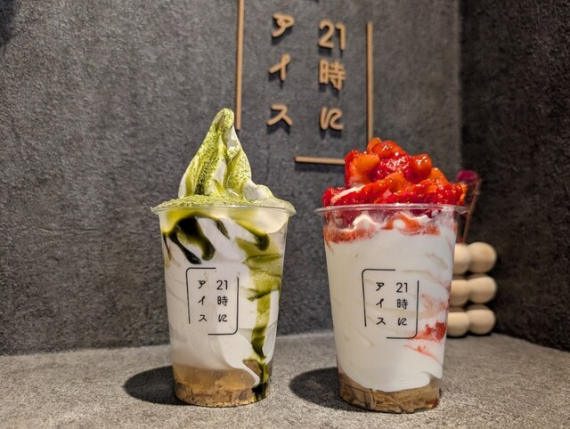

家族と、友達と、恋人と。
普段より少しリッチなアイスで、特別な夜をお過ごしください
夕食やお酒を飲んだあとに食べたくなる、あっさりとしたミルクアイスです。
recommended
- 濃厚生チョコ
- マンゴーとパンナコッタ
- ほうじ茶とわらび餅
創業から一番人気。ホイップのアクセントが効く
甘酸っぱさが夜を彩る
しみじみと、和の味わい
スタッフ募集
21時にアイスでは、一緒に働く仲間を募集しています。
ご興味をお持ちいただけた方は、お気軽にご応募ください。

家族と、友達と、恋人と。
普段より少しリッチなアイスで、特別な夜をお過ごしください
夕食やお酒を飲んだあとに食べたくなる、あっさりとしたミルクアイスです。
創業から一番人気。ホイップのアクセントが効く
甘酸っぱさが夜を彩る
しみじみと、和の味わい
21時にアイスでは、一緒に働く仲間を募集しています。
ご興味をお持ちいただけた方は、お気軽にご応募ください。